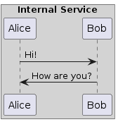

Welcome to perhaps some documentation!
¶
Indices and tables
¶
Index
Module Index
Search Page
There should be a diagram here
¶

testing out public docs
Navigation
Related Topics
Documentation overview
Quick search